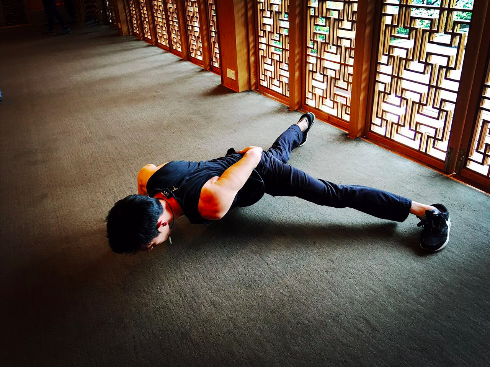
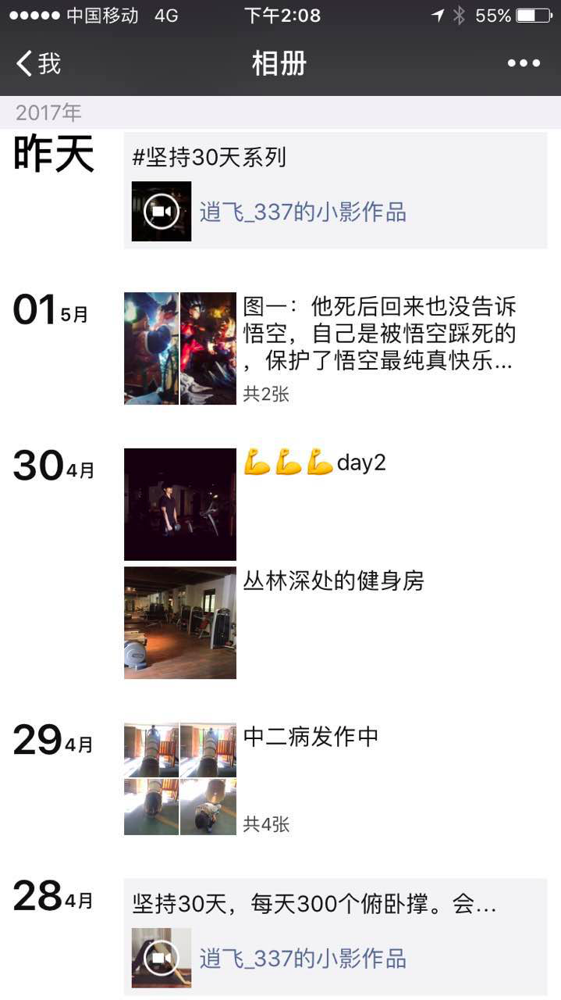

想了下，除了每天坚持吃饭睡觉发呆，俯卧撑可能是我坚持的最久的一件事。
小时候很弱鸡，初三开始尝试做俯卧撑，刚开始的时候印象比较深刻。
因为那会我们班里在休息时，很喜欢在教室后面活动，有一次在比俯卧撑，心里觉得这个动作可简单了，结果我只勉勉强强做2个，彻底伤了自尊，然后就开始练。
从最最基本的俯卧撑开始。从能做2个，5个，15个，30个，50个。
到后面各种变式，宽距，窄距，腰中式，头前式。
再到后面各种花样，倒立俯卧撑，单手俯卧撑，跳跃俯卧撑
陆陆续续到现在也快10年多了。
坚持这一项，让我收获了很多东西。
比较满意的身材，脂肪含量7.6%
从弱鸡，变成了坚强的弱鸡
学会了坚持的品质
学会如何不断超越自我
目前一分钟俯卧撑110个
一分钟单手俯卧撑47个
最近很多人私信我，是怎么健身的，怎么坚持下来的，我大多数不想回答，因为网络上太多太多这样的资料可查了。说实话，我不是健身达人，只是自己瞎折腾，就觉得很舒服，而且我的身材固然跟专业健身的没法比，开心就好。
重要的是看你有没有坚持健身的习惯。如果把健身作为一件很痛苦的事情，基本很难坚持下来。
你需要有一个明确的『目的』——你为了什么？
好的身材？还是健康的身体？良好的生活状态？还是仅仅是羡慕人家？
搞明白这个之后，然后不断的强化自己的想法，强化自己的『目的』，想清楚自己有多么渴望能达到『目的』。
即便是坚持一件毫不起眼的事情，总有一天会有意想不到的收获
每天早上都要花一个小时解开床的封印，然后去上班，忙碌一天，下班，偶尔外出吃吃饭，陪伴我们最多的可能就是手机。回到家，把鞋、衣服一脱，趴在床上，懒得动，什么都不想干。刷着朋友圈和知乎，假装对自己说我学到了『知识』。
每天重复着这样的生活
突然有一天觉得生活真的好无趣
为何不找一件对自己有益的小事情，先坚持30天看看。
想想那些你一直想做的事情，然后在接下来30天坚持去做。30天后的你，会感谢曾经第一天的自己能有这个想法和行动
最近给自己定了一个坚持30天，每天300个俯卧撑的目标
正在进行中……
